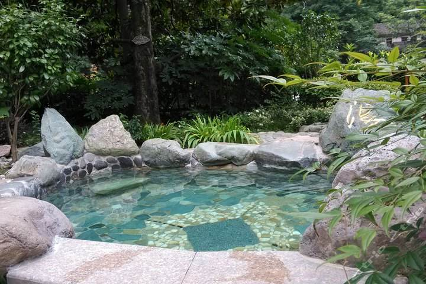
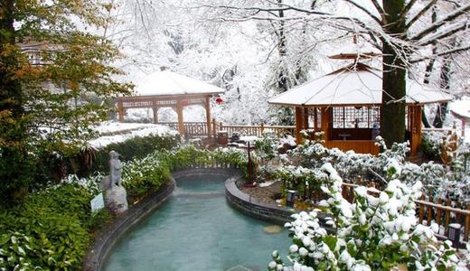

黄山温泉
黄山有温泉15处，其中被称为黄山“四绝”之一的温泉（古称汤泉），又名朱砂泉，有两个出入口。温泉水质以含重碳酸为主，无硫，自唐代开发以来，享誉千年。温泉位于紫石峰南麓，汤泉溪北岸，海拔650米，温泉主泉泉口的平均温度为42.5℃，副泉泉口水温为41.1℃，水温还随气温、降水量的变化而变化。温泉的流量原池昼夜最大流量为219.51吨，最小流量为145.23吨。位列黄山四绝之一的温泉，古称、朱砂泉，有两个出露口，据宋景佑《黄山图经》记载，传说中华民族的始祖轩辕黄帝曾在此沐浴，皱折消除，返老还童，温泉因此名声大振，被称为“灵泉”，因其具有一定的医疗价值，又被称为“灵泉”。对消化、神经、心血管、新陈代谢、运动等系统的某些疾病，有一定的治疗和保健效果。

